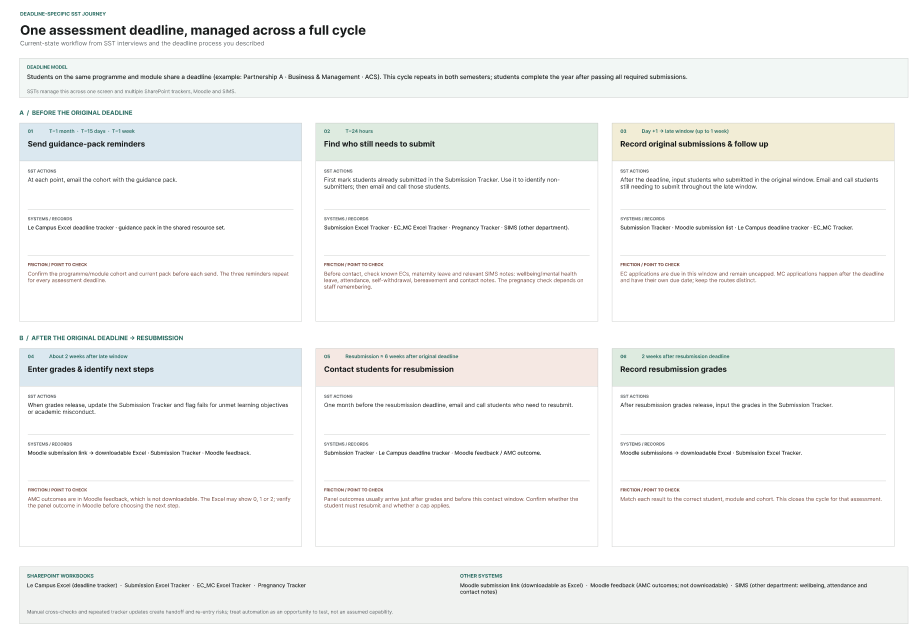

Current-state service journey · synthesized from six interviews
One assessment deadline, managed across a full cycle.
This full-size preview follows the SST workflow from the first guidance-pack reminder through late submission, grade entry and resubmission. The workshop map was created with SSTs; the digital version makes its stages, handoffs and pain points easier to inspect.
Open the live map in Figma ↗